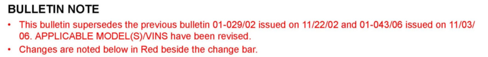
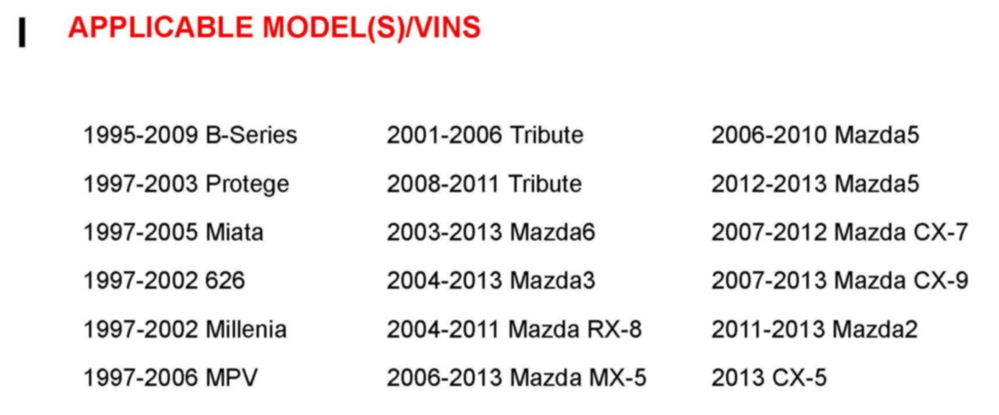
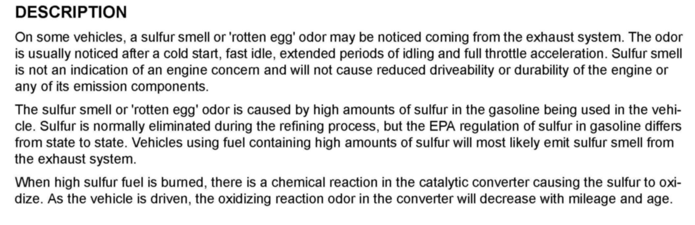
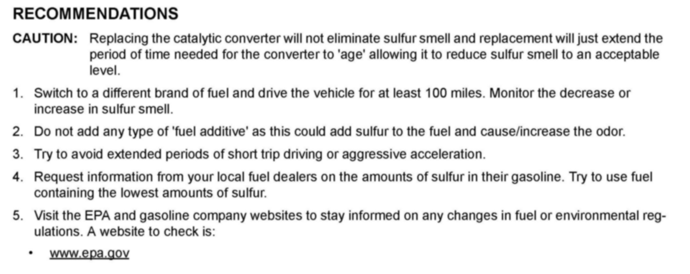

Operation CHARM
: Car repair manuals for everyone.
Home
>>
Mazda
>>
1999
>>
MX-5 Miata L4-1.8L DOHC
>>
Repair and Diagnosis
>>
Powertrain Management
>>
Fuel Delivery and Air Induction
>>
Technical Service Bulletins
>>
All Technical Service Bulletins
>>
Exhaust System - Excessive Sulfur Odors
Exhaust System - Excessive Sulfur Odors
Bulletin No: 01-010/12
Last Issued: 02/13/2012
Subject: SULFUR SMELL FROM
EXHAUST SYSTEM

BULLETIN NOTE

APPLICABLE MODEL(S)/VINS

DESCRIPTION

RECOMMENDATIONS